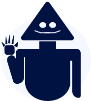

Bem-vindo(a) ao nosso incrível site de gerenciamento de mídia! Aqui você pode salvar todos os filmes e séries que já assistiu, além de classificar cada um deles. É fácil e divertido! Você pode criar listas personalizadas e adicionar tags para organizar seus títulos favoritos. E o melhor de tudo, é grátis! Junte-se à nossa comunidade agora e compartilhe suas recomendações com seus amigos. Vamos começar a maratonar!
Este projeto foi criado por cinco membros durante o último período em que eles estavam cursando a faculdade. Durante o processo de criação do projeto, os membros da equipe trabalharam juntos para planejar, projetar e desenvolver a plataforma, utilizando habilidades e conhecimentos adquiridos ao longo de seus estudos.